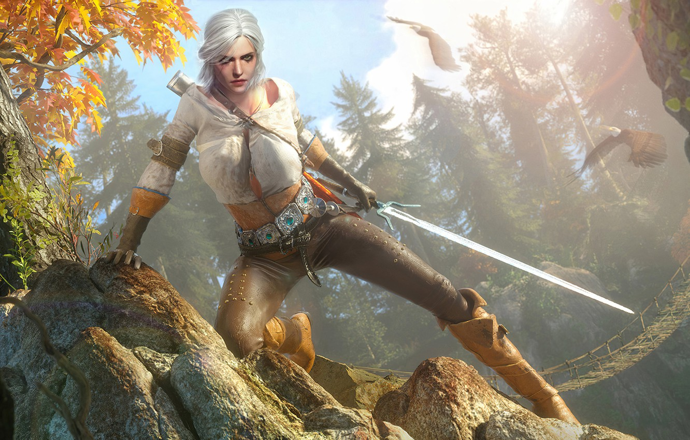

Топ 6 игр, которые стоит пройти до 2024 года
Какие же 10 игр можно пройти до 2024?
Я думаю вы согласитесь с тем, что игры стали неотъемлемой частью нашей жизни, по крайней
мере,
у
многих людей, игры имеют значимую роль в их жизни. И я думаю, что многим хотелось бы узнать побольше
хороших, качественных, а главное с интересным сюжетом игр, чтобы получить положительные эмоции,
отвечься
от
реальности или же просто занять себя чем то. Поэтому представляю вам свой собсвтенный топ 10 игр до
2023
года, которые я уже прошел и считаю, что вам они тоже понравятся. (Все ссылки на скачивание я
оставлю на
провернный мной сайт moreigr.ru, просто нажмите на название игры и вас перенесет на сайт со
скачиванием
самой игры)
Линейка игр, которая открывает наш топ - это Subnautica. Игра основана на подводных приключениях
главного
героя,
который вместе со своей организацией "Altera", путешествовал на космическом корабле и был сбит по
неизсвестной
причине. Главный герой оказался на безлюдной планете 4546B, которая на 90 процентов состоит из
океана,
кипящего
неизвестынми морскими обитателями и он должен выбраться с этой планеты, но на его пути встречается
множество
сложностей, включая местных обитателей планеты.
5-ое место в нашем топе занимает хоррор-игра The Forest.Сюжет игры построен на выживание отца,
который
летел вместе со
своим сыном Tommy в самолете, и также по неизсвестной причине их самолет потерпел крушение, главный
герой
оказался на таком же безлюдном острове (или не совсем) и должен выживать, чтобы найти своего сына и
убраться
с
этого острова, однако у главного героя возникают трудности, ему небходимо исследовать пещеры и
прочие
места,
для
того чтобы отыскать своего сына. А самое главное, никто не будет вам говорить куда идти и что
делать,
ваша
жизнь
будет в ваших руках. В общем игра огонь, не без багов, но их буквально единцы. Так что приятной
игры!
STLAKER - время ловить маслины мужики. А если серьезно - эту игру я открыл для себя недавно, но она
очень
мне
понравилась своей напрягающей атмосферой. Так как я не любитель хорроров, "шоколадница" частенько
сжималась,
но
игра не оставила меня равнодушной, причем советую пройти всю линейку сталкера, даже с модами,
безумно
классная
игра.
Horizon Zero Dawn - тоже не менее интересная игра, которую я прошел на ура, интересный геймлпей,
красивая
графика, качаственно проработанный сюжет и другие интересные вещи будут ждать вас в этой игре. Начав
игру,
вы побудете обычной, рыжей девочкой Элой, которая оказалась изгоем, и жила с не родным для нее
отцом, и
повозрослев она
захочет узнать, кто была ее мать и почему ее дочь стала изгоем, в общем хорошая игра.
И вот мы уже на 2 строчке нашего топа, и хочу отдать уверенное 2-ое место игре - Metro:Exodus, игра
с
очень
сильным сюжетом, красивой графикой, разнообразным геймлпеем. Вы начнете игру в роли бывшего военного
Артема,
который верил в то, что кто то еще остался в живых после ядерной войны, и вам предстоить выяснить
был ли
он
прав
и осталось ли какое нибудь свободное от радиации место!

Чтож, вот и подошли мы к топ 1 игре , по моему мнению, однако эта игра получила премию
"Игра
Года", и да, как вы
поняли, речь идет об игре Ведьмак 3: Дикая Охота. Безумно красивая и приятная игра для 2015 года,
прекрасная
графика, анимации, интересная боевка, а самое главное разнообразный геймлпей, множество NPS у
которых
можно
взять много интерсный заданий. Может прям сейчас брать и скачивать ее, я уверен, вам понравится эта
игра,
поэтому даже про сюжет не буду ничего рассказывать, потому что лучше вы сами окунетесь с головой в
мир
Ведьмака,
чем я вам все испорчу.
Ну вот и закончился наш топ, благодарю вас за посещение моего сайта, надеюсь и вам понравятся эти, pro100
хорошей игры!)